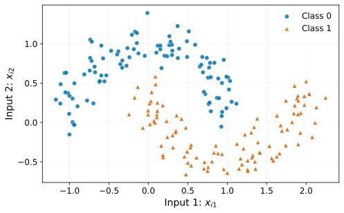
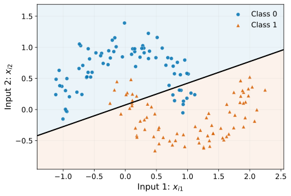
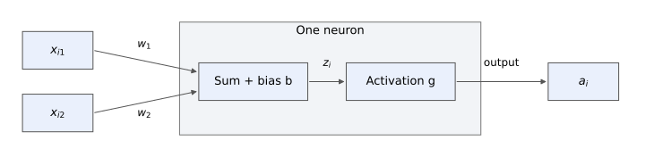
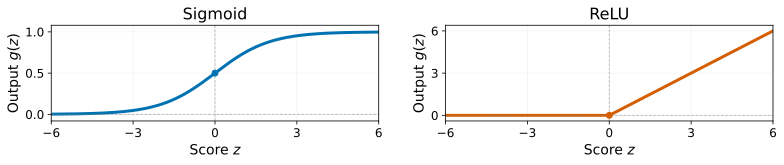
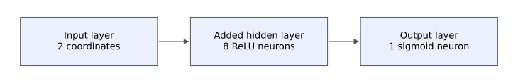
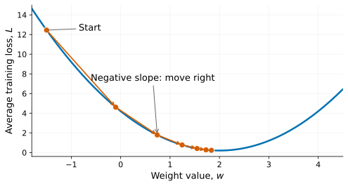
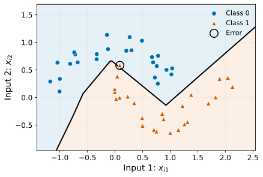

How a small network learns to classify data
Chaoyang Wang
A neural network is a machine learning model built from layers of connected computational units called neurons (Lee 2021; Torralba et al. 2024).
Training adjusts numerical parameters called weights and biases.
Examples
| Application | Class 1 |
|---|---|
| Email filtering | Spam |
| Cat-versus-dog images | Cat |
Each observation is represented by numerical inputs.
Binary classification
\hat{p} = f_{\boldsymbol{\theta}}(\mathbf{x}),
where \mathbf{x} is the input feature vector, \boldsymbol{\theta} contains the learned weights and biases, f_{\boldsymbol{\theta}} is the network function, and \hat{p} is the estimated probability of class 1.
Why use one? A network can learn nonlinear relationships between inputs and outcomes (Lee 2021; Torralba et al. 2024).

\mathbf{x}_i = \begin{bmatrix} x_{i1} \\ x_{i2} \end{bmatrix},
where i=1,\ldots,200 indexes the points and x_{i1},x_{i2} are the two inputs. The known class label is y_i\in\{0,1\}.
Data: generated with scikit-learn’s make_moons (scikit-learn developers, n.d.-b).
Question: Can a straight-line boundary capture this pattern?

Next: neurons → activation functions → 8 neurons in one hidden layer.
Reading the plot
A straight boundary misses the curved pattern.
Model connection
Logistic regression can be viewed as a neural network with no hidden layer (Stanford CS231n, n.d.).

1. Combine the inputs
z_i = b + w_1x_{i1} + w_2x_{i2},
where z_i is the score before activation, b is the bias, w_1,w_2 are the weights, and x_{i1},x_{i2} are the inputs for observation i.
2. Apply an activation
a_i = g(z_i),
where g is the activation function and a_i is the output after applying it to z_i.
Logistic regression: g=\sigma gives a_i=\hat{p}_i, with no hidden layer (Stanford CS231n, n.d.).

\sigma(z)=\frac{1}{1+e^{-z}}.
Outputs a value between 0 and 1. Both models: estimate the probability of class 1 at the output.
\operatorname{ReLU}(z)=\max(0,z).
Zero if z\le0; otherwise, z. Our network: transform hidden-neuron scores.
Nonlinear hidden neurons add flexibility before the sigmoid output (Torralba et al. 2024; scikit-learn developers, n.d.-f).

Hidden layer, j=1,\ldots,8
h_{ij}=\operatorname{ReLU}\left( b_j+w_{j1}x_{i1}+w_{j2}x_{i2} \right),
where h_{ij} is hidden neuron j’s output for observation i, w_{j1},w_{j2} are its input weights, and b_j is its bias.
Output layer
\hat{p}_i=\sigma\left( c+v_1h_{i1}+\cdots+v_8h_{i8} \right),
where v_1,\ldots,v_8 are the output weights, c is the bias, \sigma is sigmoid, and \hat{p}_i is the estimated probability of class 1.
Our forward pass: inputs → ReLU hidden features → sigmoid probability (scikit-learn developers, n.d.-f, n.d.-e).
Input: (x_{i1},x_{i2})=(1,0.5). Weights and biases are manually chosen for demonstration.
1. Two hidden neurons
z_{ij}: score before ReLU; h_{ij}: output after ReLU (Torralba et al. 2024).
\begin{aligned} z_{i1} &= 0.5+1\cdot1-2\cdot0.5=0.5,\\ h_{i1} &= \max(0,0.5)=0.5,\\ z_{i2} &= 0.25-1\cdot1+1\cdot0.5=-0.25,\\ h_{i2} &= \max(0,-0.25)=0. \end{aligned}
2. Output score before sigmoid
Hidden outputs: (0.5,0,1,1,0,0,0.5,0).
Chosen output weights (v_1,\ldots,v_8)= (1,-1,0.5,-0.5,1,-1,1,1); output bias c=0.
\begin{aligned} s_i &= c+\sum_{j=1}^{8}v_jh_{ij}\\ &= 1\cdot0.5+0.5\cdot1\\ &\quad -0.5\cdot1+1\cdot0.5=1. \end{aligned}
Zero contributions are omitted in the substitution.
3. Apply sigmoid: \hat{p}_i=\sigma(s_i)=\sigma(1)\approx0.731; predict class 1 because \hat{p}_i>0.5.
\ell_i=-\left[ y_i\ln(\hat{p}_i)+(1-y_i)\ln(1-\hat{p}_i) \right],
where y_i is the true class (0 or 1), \hat{p}_i is the estimated probability of class 1, \ell_i is the loss for observation i, and \ln is the natural logarithm with base e (scikit-learn developers, n.d.-d).
Smaller loss is better.
Our worked example
Assume y_i=1, with \hat{p}_i\approx0.731 from the forward pass:
\ell_i=-\ln(0.731)\approx0.313.
Keep y_i=1 and compare:
| \hat{p}_i | Loss \ell_i |
|---|---|
| 0.100 | 2.303 |
| 0.731 | 0.313 |
| 0.900 | 0.105 |
Training goal: reduce the average loss on the training observations.

One weight update
w_{\text{new}} = w_{\text{old}} - \eta\, \underbrace{\frac{\partial L}{\partial w}}_{\text{slope}},
where w is one weight, L is the average training loss, and \eta>0 is the learning rate controlling the step size.
Backpropagation computes gradients; the optimizer uses them to update weights and biases (Torralba et al. 2024).
Configured model: scikit-learn’s MLPClassifier (scikit-learn developers, n.d.-e), with 2 inputs → 8 ReLU neurons → 1 sigmoid output.
from sklearn.neural_network import MLPClassifier
network_model = MLPClassifier(
hidden_layer_sizes=(8,), activation="relu", solver="sgd",
batch_size=len(train_features), learning_rate="constant",
learning_rate_init=0.1, momentum=0.0, nesterovs_momentum=False,
alpha=0.0, early_stopping=False, max_iter=10000,
tol=1e-5, n_iter_no_change=100, random_state=2026,
)hidden_layer_sizes=(8,) creates one hidden layer with eight neurons.alpha=0 disables the penalty.The configured model learns from the 150 training observations. Predictions and accuracy use the same 50 held-out observations as the straight-line model.
fit: learn weights and biases from the training observations.predict_proba: estimate probabilities; [:, 1] selects class 1.predict and score: predict labels and calculate test accuracy.
150 training observations; 50 test observations
Accuracy (scikit-learn developers, n.d.-d):
\text{Test accuracy} = \frac{\text{correct predictions}}{\text{test observations}}.
| Model | Correct | Accuracy |
|---|---|---|
| Straight line | 44/50 | 88% |
| Network | 49/50 | 98% |
Black line: \hat{p}=0.5.
Black rings: prediction errors.
The nonlinear boundary improves accuracy on this test split.
Overfitting: learning training noise can hurt predictions on new data (Stanford CS231n, n.d.).
Training choices: initial weights and the learning rate can affect the fitted model (scikit-learn developers, n.d.-f).
Limited evidence: our result comes from one small synthetic dataset and one train/test split.
Structure: weighted sums, biases, and nonlinear hidden activations create a flexible model.
Learning: backpropagation computes gradients; the optimizer updates parameters to reduce training loss.
Evaluation: check predictions on held-out data (scikit-learn developers, n.d.-a). Compare with a simpler baseline.